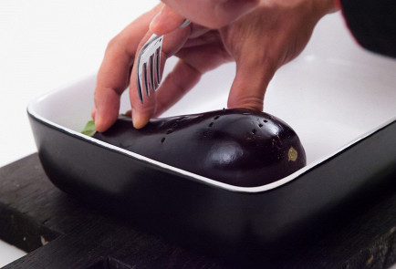
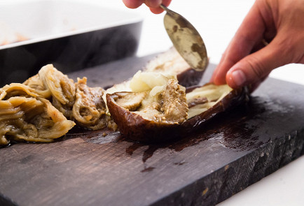
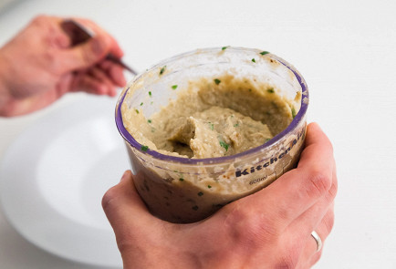

Babaganoush with sesame - A classic Middle Eastern appetizer that can be eaten on its own, with bread, or as a cold or hot side dish. It goes best with dishes with cheese and lamb.
Ingredients - Babaganush:
Eggplants 4 pcs.
Sesame seeds 50 g
Lemon 1 pcs.
Olive oil 50 ml
Parsley 10 g
Ground black pepper to taste
garlic 3 cloves
salt to taste
Recipe - Babaganush:
Pierce the eggplants with a fork or knife in several places and place in an oven preheated to 180 degrees for half an hour. 
When ready, scoop out the flesh, being careful not to burn yourself, or leave to cool and remove when the eggplants are cold. The less purple skin that gets into the dish, the better: only the pulp is needed. 
In a blender, make a paste of sesame seeds, garlic, lemon juice, olive oil, a pinch of salt and pepper. Add eggplant and parsley and turn it all into a smooth puree. 